Global Innovation Internship Program
A 15-day international research fellowship exploring Artificial Intelligence, Ubiquitous GIS, Drone Telemetry, Robotics, Data Science, and Agentic Workflows. Conducted at Asian Institute of Technology (Pathum Thani, Thailand).
International Academic Fellowship
The Global Innovation Internship Program (GIIP-2026) is an elite academic initiative designed by the Asian Institute of Technology to immerse top engineering scholars in frontier technology research and cross-border innovation.
Scholar Selection
Selected as part of the elite delegation representing United Institute of Technology, Prayagraj. Gautam secured 1st Rank in CSE (DS) and Rank 5 College-wide in AKTU Exams.
Hands-On Research Labs
Executed experiments in UAV flight planning, EpiCollect5 spatial mapping, Python EDA, Power BI dashboards, and robotic arm trajectory control.
Cross-Cultural Diplomacy
Engaged with international faculty, visited King Mongkut's Institute of Technology Ladkrabang (KMITL), and explored Thailand's rich technological heritage.
The 15-Day Journey Timeline
An interactive breakdown of key milestones, academic modules, and field research conducted during the fellowship.
Arrival & Campus Onboarding
Landed at Suvarnabhumi International Airport (Bangkok), checked into the AIT Conference Center, and explored the international campus.
Orientation & Academic Induction
Formal welcome address by Dr. Nitin Tripathi and AIT Directorate, safety briefings, and program schedule overview.
Artificial Intelligence & Prompt Engineering
Masterclass on Generative AI architectures, prompt optimization strategies, and system prompt engineering.
Ubiquitous GIS & Field Survey (EpiCollect5)
Deployed EpiCollect5 mobile mapping application across AIT campus for spatial telemetry collection and geo-tagging.
Exploratory Data Analysis (EDA)
Statistical data cleaning, visualization, and insight generation using Python, Pandas, and Matplotlib.
IoT, Sensors & Smart Embedded Systems
Hands-on micro-controller sensor deployment, telemetry collection, and real-time environment data monitoring.
KMITL University Visit & Robotics Labs
Academic excursion to King Mongkut's Institute of Technology Ladkrabang (KMITL) to inspect industrial robotic arms.
Corporate Communication & Soft Skills
Executive workshop led by Prof. Manisha Bose on cross-cultural negotiation, technical elevator pitches, and body language.
National Science Museum & Cultural Heritage
Visited Thailand National Science Museum and ancient historical temples in Ayutthaya.
Design Thinking & Product Ideation
Empathy mapping, problem framing, and prototype wireframing for the BusSetu transit solution.
Business Intelligence & Power BI
Built interactive executive dashboards using Microsoft Power BI for transit analytics.
Agentic AI & Autonomous Workflows
Deep dive into multi-agent systems, autonomous task planning, and LLM tool execution.
BusSetu Innovation Sprint
Final software development sprint, real-time map integration, and performance benchmarking for BusSetu.
Research Presentation & Panel Review
Presented the BusSetu platform and research findings before AIT Directorate & International Faculty Panel.
Graduation Ceremony & Farewell
Awarding of Official International GIIP Certification, gala dinner, and return flight to India.
Core Learning Domains
Key research areas mastered during the 15-day fellowship at Asian Institute of Technology.
Artificial Intelligence
Deep neural network concepts, Generative AI models, and model tuning strategies.
Prompt Engineering
System prompts, chain-of-thought reasoning, and context window optimization.
Ubiquitous GIS
Spatial data collection, EpiCollect5 mobile mapping, and geographic telemetry.
IoT & Sensors
Micro-controller telemetry, sensor data streaming, and hardware integration.
Robotics & Arms
Robotic arm kinematics, trajectory path planning, and autonomous agents.
Exploratory Data Analysis
Python Pandas, NumPy, statistical data cleaning, and dataset visualization.
Power BI Analytics
Executive dashboard design, DAX formulas, and interactive business metrics.
Digital Strategy
Product outreach metrics, conversion funnels, and digital presence scaling.
Corporate Comm
Cross-cultural negotiations, executive pitch presentations, and leadership.
Design Thinking
Human-centered problem mapping, user interviews, and rapid wireframing.
Agentic AI
Multi-agent tool invocation, autonomous task decomposition, and memory.
QGIS & Drones
Quantum GIS spatial analysis, UAV aerial telemetry, and flight path mapping.
The 15-Day Deep Dive
Detailed logs, photos, and key takeaways recorded during every day of the fellowship at AIT Bangkok.
Landmark Arrival in Bangkok, Thailand
Landed at Suvarnabhumi International Airport (Bangkok). Private transit delegation to AIT Campus in Pathum Thani.
Check-in at AIT Conference Center, campus tour, and welcome cohort dinner.
- Established research readiness in a multicultural international academic environment.
- Explored AIT campus infrastructure, library, and global student hub.
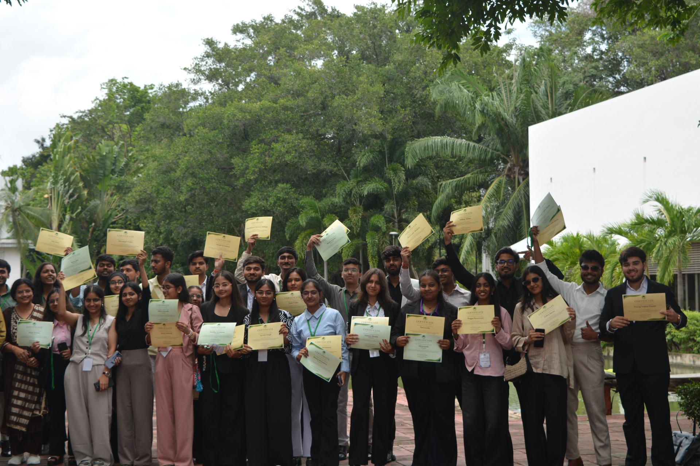
Official Induction & Academic Briefing
Welcome address by Dr. Nitin Tripathi (Director SDP AIT) and program coordinators.
Research ethics induction, laboratory access setup, and team cohort assignments.
- Aligned on GIIP 2026 milestone deliverables and evaluation criteria.
- Setup international academic credentials and lab workstation access.
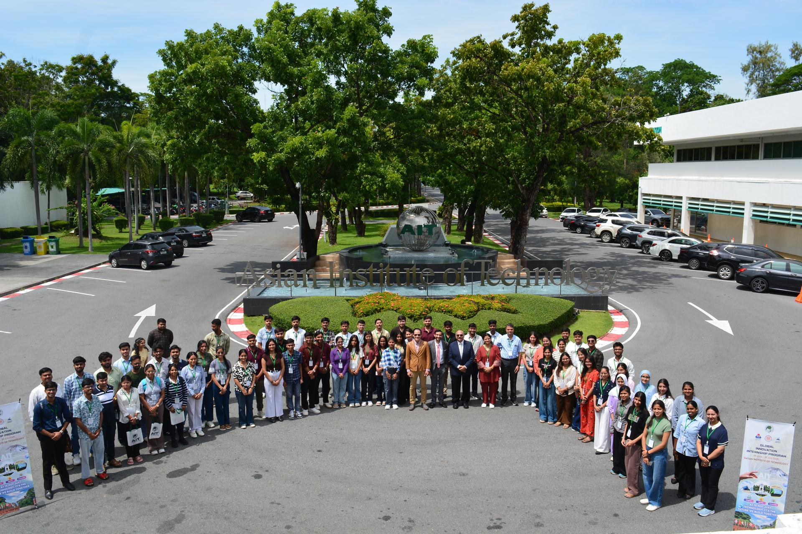
Artificial Intelligence & Prompt Engineering
Intensive workshop on LLM prompt optimization, system instruction design, and multi-turn conversational agents led by Dr. Nitin Tripathi.
- Mastered structured JSON output formatting from LLM inference engines.
- Learned context truncation and token management strategies.
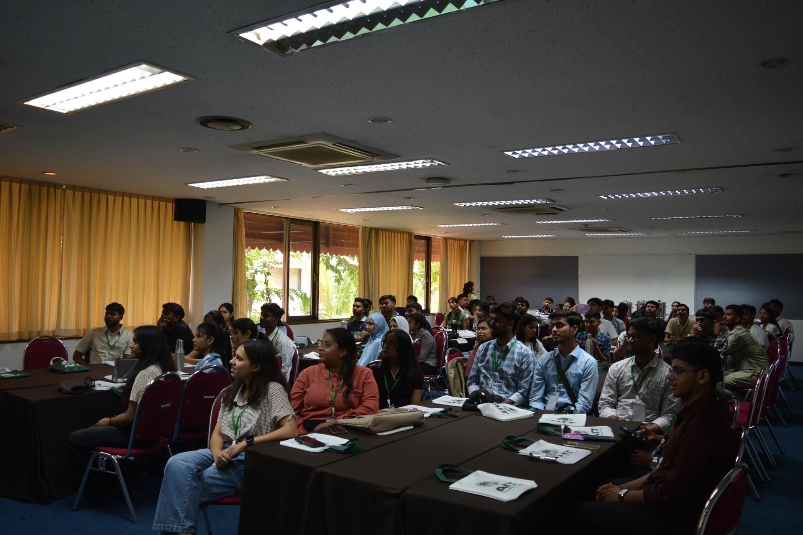
Ubiquitous GIS & Field Survey Mapping
Field survey deployment across AIT campus using EpiCollect5 to record geo-referenced environmental attributes and spatial coordinates.
- Collected 100+ spatial data points for campus infrastructure analysis.
- Exported GeoJSON feeds into spatial database visualizers.
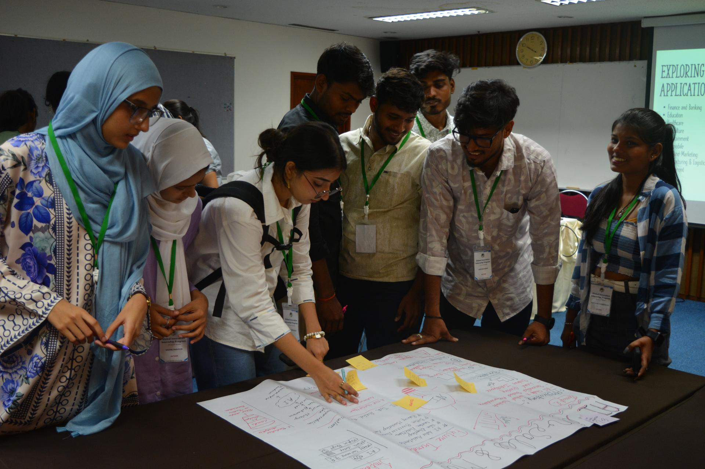
Exploratory Data Analysis (EDA)
Statistical data cleaning, outlier detection, and insight generation using Python, Pandas, Matplotlib, and Seaborn.
- Built automated data validation scripts for messy telemetry datasets.
- Generated correlation heatmaps and distribution curves.
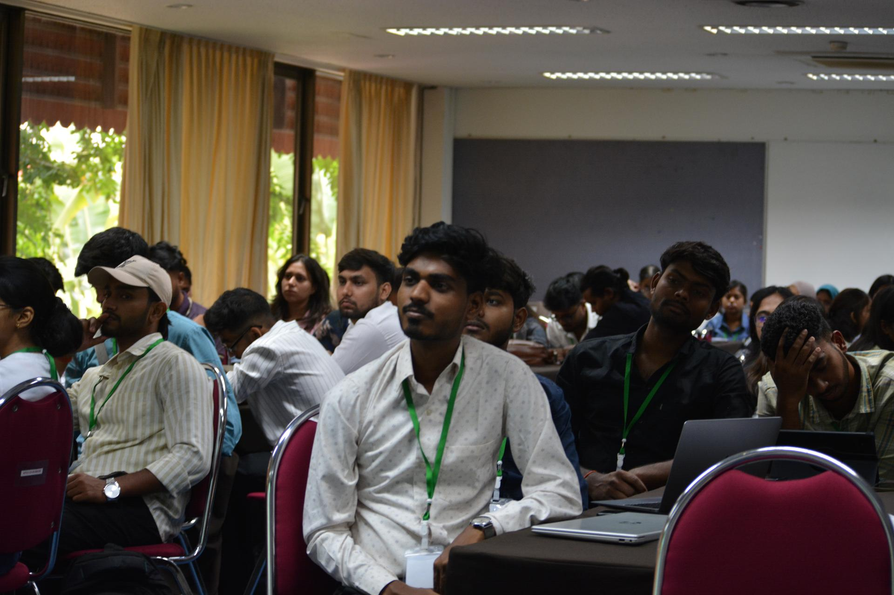
IoT, Sensors & Smart Embedded Systems
Hands-on microcontroller deployment, environmental sensor calibration, and MQTT telemetry streaming with Dr. Vatcharunya.
- Configured real-time sensor streams over low-power Wi-Fi networks.
- Analyzed edge sensor packet loss and latency parameters.
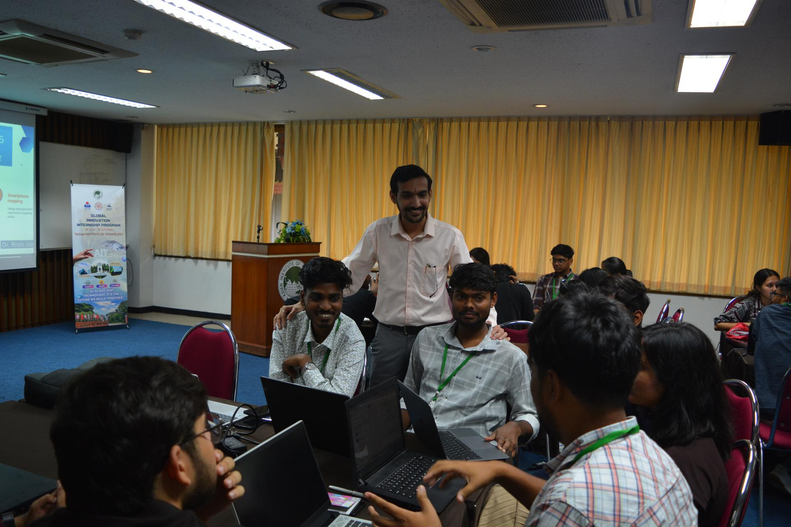
KMITL University & Robotics Arm Research
Academic delegation visit to King Mongkut's Institute of Technology Ladkrabang (KMITL). Inspected 6-axis robotic arms and autonomous fabrication rigs.
- Analyzed inverse kinematics and robotic joint trajectory algorithms.
- Interacted with international robotics faculty at KMITL research center.
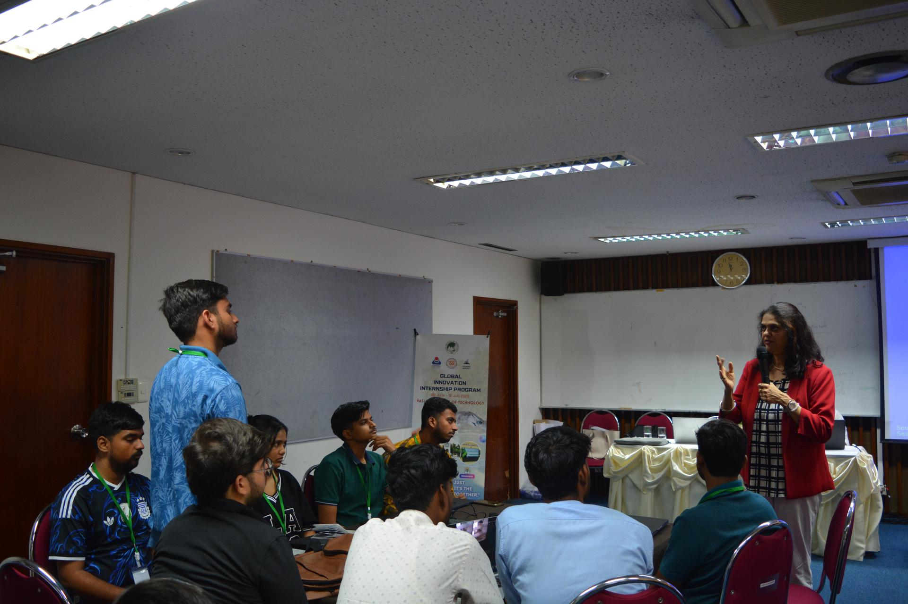
Corporate Communication & Global Leadership
Masterclass on cross-cultural negotiation, high-impact executive presence, and international team leadership with Prof. Manisha Bose.
- Mastered non-verbal executive communication in global research panels.
- Practiced conflict resolution and persuasive pitch techniques.
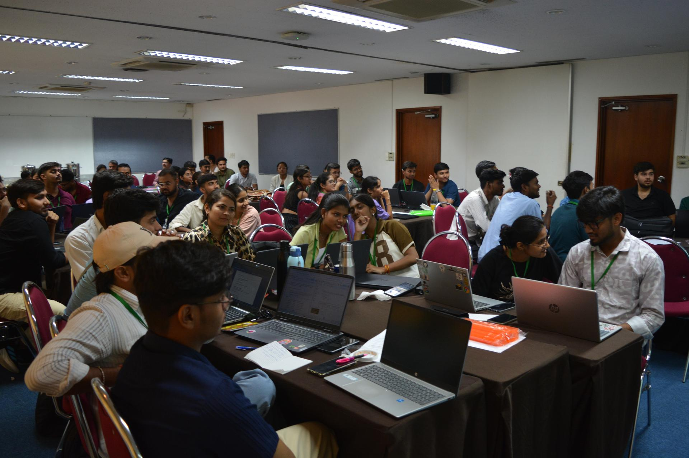
National Science Museum & Cultural Heritage
Excursion to Thailand National Science Museum and ancient historical temples in Ayutthaya.
- Explored interactive exhibits on Southeast Asian technological evolution.
- Studied spatial conservation techniques used at UNESCO heritage sites.
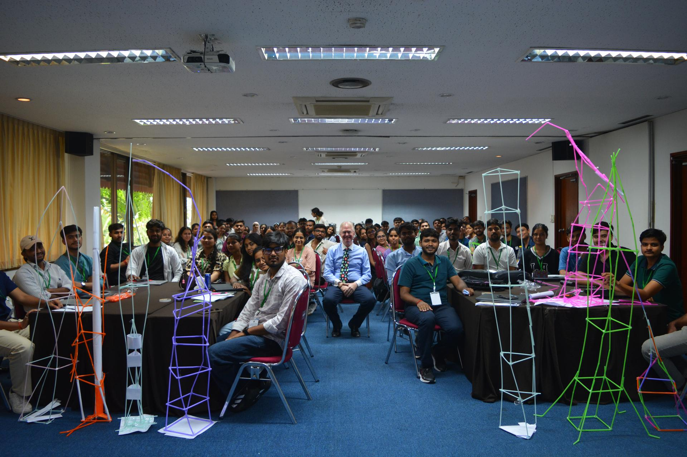
Design Thinking & BusSetu Product Ideation
Empathy mapping, commuter persona definition, and prototype wireframing for the BusSetu public transit tracking solution.
- Defined core user journeys for low-literacy transit commuters.
- Designed high-contrast map UI controls for outdoor mobile visibility.
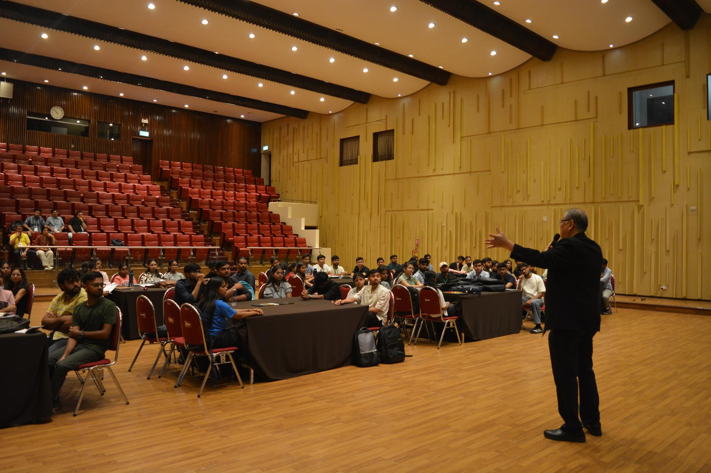
Business Intelligence & Power BI Analytics
Built interactive executive dashboards in Microsoft Power BI modeling public transit delay metrics and passenger throughput.
- Wrote DAX measures for dynamic time-series aggregation.
- Created executive drill-down dashboards for transit authority managers.
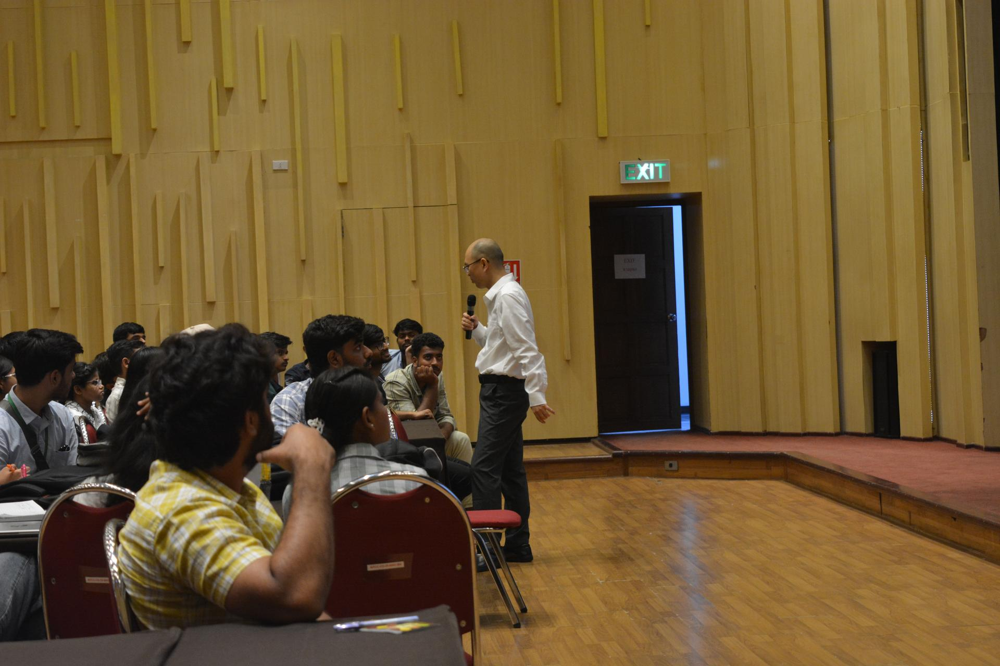
Agentic AI & Autonomous Agent Workflows
Deep dive into multi-agent coordination, autonomous tool calling loops, and self-correcting code execution workflows.
- Architected multi-agent delegation pipelines for complex research tasks.
- Implemented function calling handlers with schema validation.
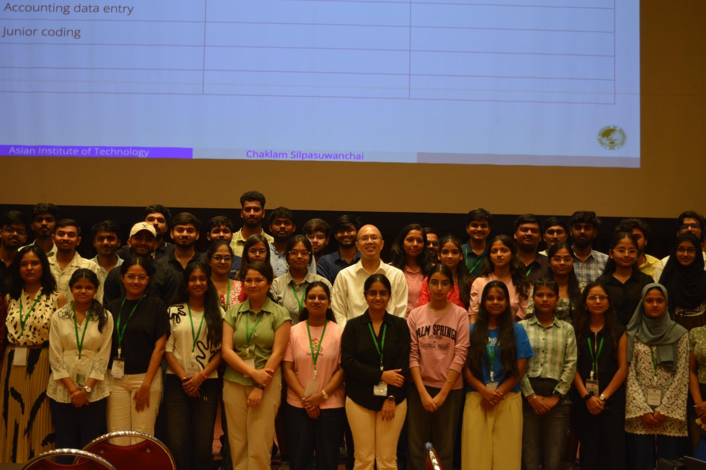
BusSetu Innovation Sprint & Live Integration
Final software development sprint, real-time Google Maps integration, GTFS feed parsing, and Vercel edge deployment for BusSetu.
- Achieved sub-second route rendering performance on mobile browsers.
- Verified real-time vehicle coordinate updates on live vector maps.
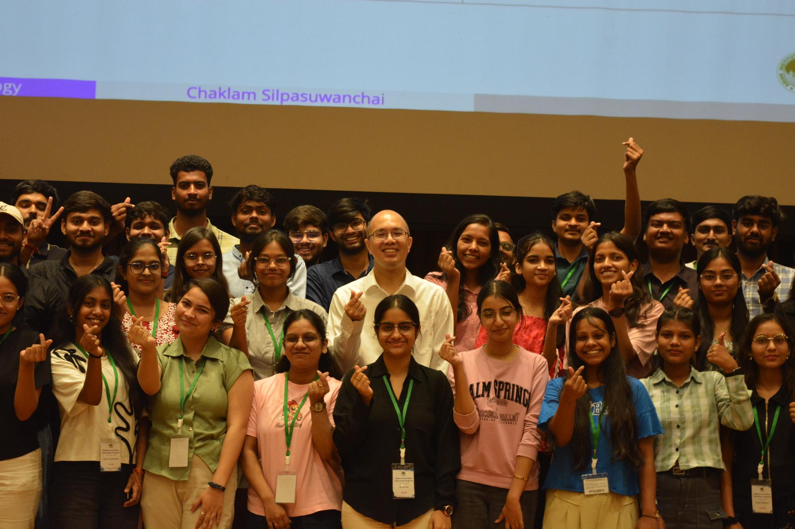
Final Project Defense & Faculty Panel Review
Presented the BusSetu platform, architecture diagrams, live web application, and research findings before the AIT Directorate & International Faculty Panel.
- Received top commendation from Dr. Nitin Tripathi and faculty jury.
- Successfully demonstrated live GTFS stream parsing and ETA calculation.
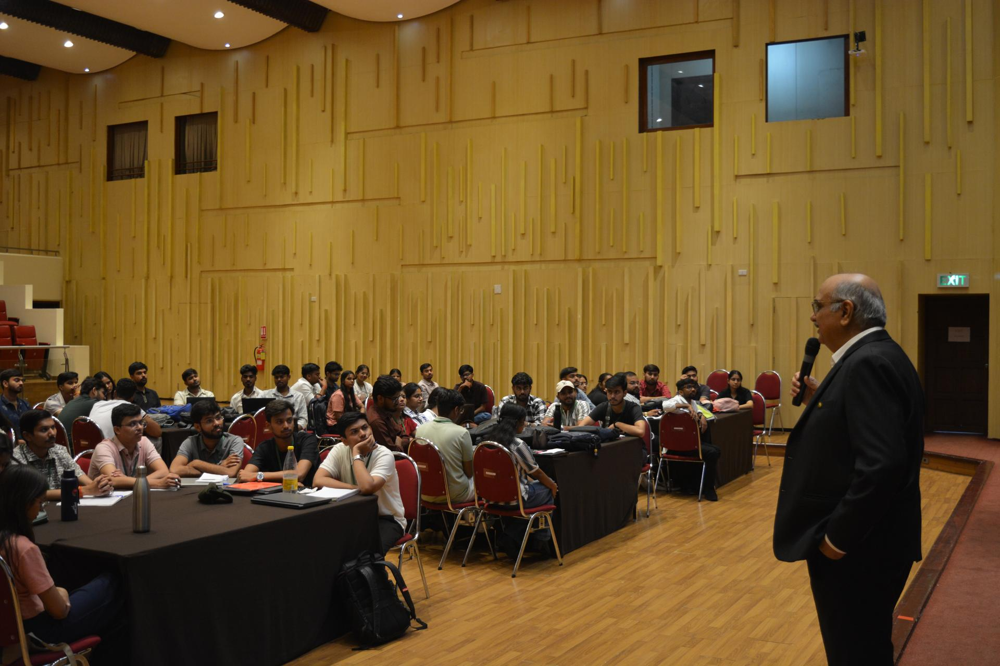
Graduation Ceremony & Farewell Gala
Awarding of Official International GIIP 2026 Certificates by AIT Directorate, valedictory address, farewell dinner, and return flight to India.
- Concluded 15-day international fellowship with highest distinction.
- Established lifelong academic and research networks across Thailand and global institutions.
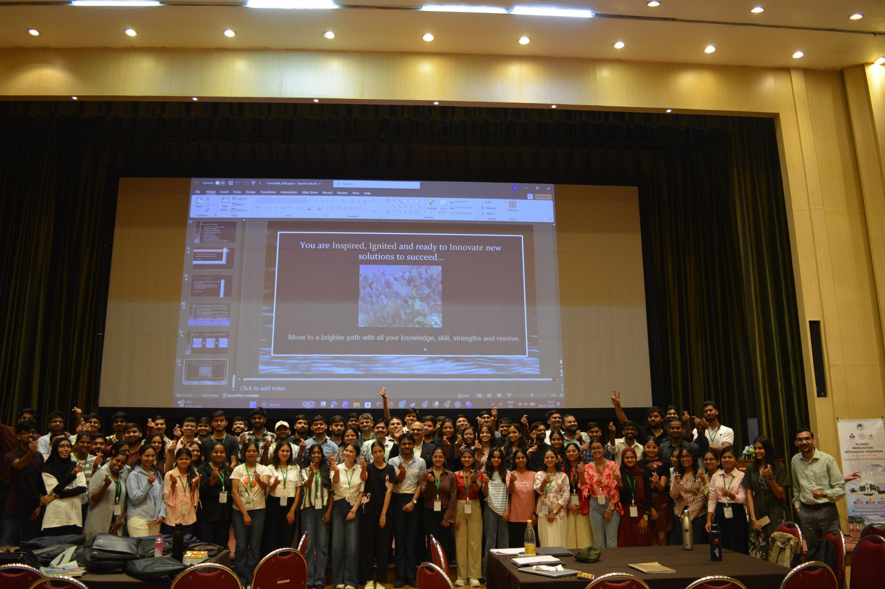
BusSetu Transit Platform
A real-time public transit tracking and route optimization platform engineered to eliminate commuter uncertainty across regional transport networks.
Problem Statement
Commuters in regional transport corridors face severe timetable uncertainty, zero real-time vehicle visibility, and frustrating long wait times due to uncoordinated dispatch data.
Solution Architecture
BusSetu ingests GTFS static schedule files and blends them with real-time GPS telemetry streams to compute accurate arrival ETA projections on interactive vector maps.
My Role as Lead Architect
Engineered the full-stack system architecture, built low-latency map visualizers, integrated Google Maps APIs, and presented the working prototype before AIT faculty.
Faculty & Mentors
Distinguished professors, research directors, and corporate trainers who guided the GIIP 2026 fellowship.
.jpg)
Dr. Nitin Tripathi
.jpg)
Dr. Chutiporn Anutariya
.jpg)
Dr. Prapas
.jpg)
Dr. Rishi

Prof. Manisha Bose
.jpg)
Dr. Vatcharunya
.jpg)
Dr. Sarawut

Prof. Napat
Moments & Memories Gallery
High-resolution photographic archives capturing lectures, field surveys, campus life, and cultural experiences.
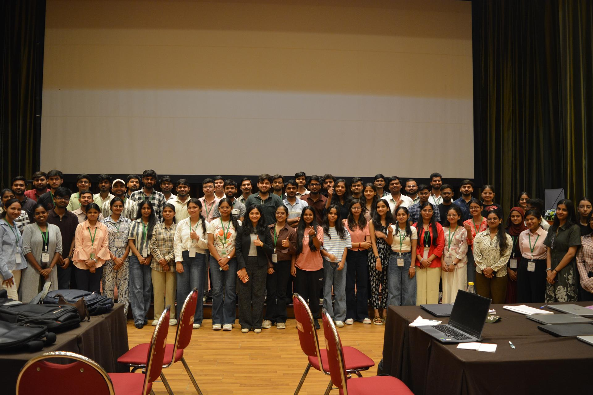
Reflection & Growth
Personal synthesis of academic insights, technical evolution, and global perspective gained during the fellowship.
Academic Excellence
Reinforced theoretical concepts learned during B.Tech CSE (DS) through direct application in international research labs.
Technical Mastery
Gained hands-on mastery in Agentic AI workflows, spatial data analytics, drone flight planning, and rapid web prototyping.
Global Exposure
Developed cross-cultural communication skills, international research ethics, and global academic networking habits.
Future Vision
Inspired to continue pioneering full-stack AI applications, open-source infrastructure tools, and scalable software solutions.